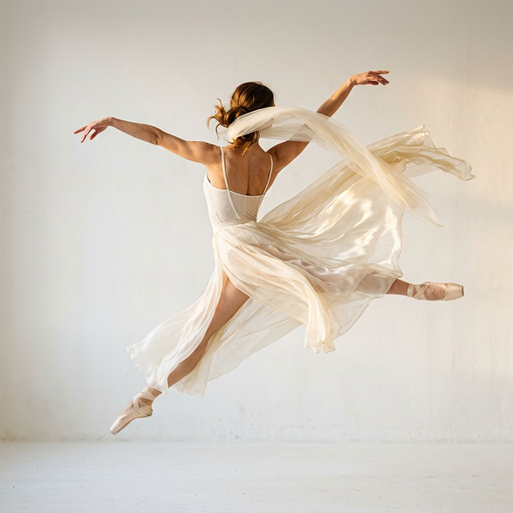

Syllabus Royal Academy of Dance
A grade inteira,
aqui. Sem perguntar.
54 turmas de segunda a sábado, com o dia e o horário de cada uma — do Baby ao adulto, no Swiss Park, em Campinas.
Oito modalidades
Cada cartão leva direto ao pedaço da grade com as turmas dessa modalidade — dia e horário.
Todas as turmas, com dia e hora
Esta é a grade que roda hoje na escola — as 54 turmas, o dia e o horário. Toda aula tem 1 hora; as de dois dias na semana são 2× por semana, as de um dia são 1×. Ache a sua: o WhatsApp já abre com o nome da turma escrito.
Mostrando 54 de 54 turmas
Ballet Clássico20 turmas · Seg a Sáb
- Ballet Grade 1Quero esta
- Ballet Baby 1Quero esta
- Ballet Baby 1Quero esta
- Ballet Pre-PrimaryQuero esta
- Ballet Baby 2Quero esta
- Ballet Grade 1Quero esta
- Ballet Grade 2Quero esta
- Ballet AdultoQuero esta
- Ballet AdultoQuero esta
- Ballet Pre-PrimaryQuero esta
- Ballet Intermediate FoundationQuero esta
- Ballet PrimaryQuero esta
- Ballet AdultoQuero esta
- Ballet Baby 1Quero esta
- Ballet Baby 2Quero esta
- Ballet Baby 2Quero esta
- Ballet Baby 1Quero esta
- Ballet Primary PreparatórioQuero esta
- Ballet Baby 1Quero esta
- Ballet InfantilQuero esta
Jazz14 turmas · Seg a Qui · Sáb
- Jazz AdultoQuero esta
- Jazz InfantilQuero esta
- Jazz Adulto InicianteQuero esta
- Jazz JuvenilQuero esta
- Jazz Infantil 2Quero esta
- Jazz Infantil 1Quero esta
- Jazz JuvenilQuero esta
- Jazz AdultoQuero esta
- Jazz BabyQuero esta
- Jazz Infanto-JuvenilQuero esta
- Jazz JuvenilQuero esta
- Jazz Infanto-JuvenilQuero esta
- Jazz AdultoQuero esta
- Jazz InfantilQuero esta
Hip Hop9 turmas · Ter · Qui a Sáb
- Hip Hop InfantilQuero esta
- Hip Hop Infanto-JuvenilQuero esta
- Hip Hop InfantilQuero esta
- Hip Hop JuvenilQuero esta
- Hip Hop JuvenilQuero esta
- Hip Hop InfantilQuero esta
- Hip Hop BabyQuero esta
- Hip Hop Infanto-JuvenilQuero esta
- Hip Hop BabyQuero esta
Sapateado5 turmas · Seg · Qua · Sex
- Sapateado InfantilQuero esta
- Sapateado Infanto-JuvenilQuero esta
- Sapateado AdultoQuero esta
- Sapateado InfantilQuero esta
- Sapateado InfantilQuero esta
Contemporâneo2 turmas · Sex
- ContemporâneoQuero esta
- Contemporâneo AdultoQuero esta
Teatro Musical2 turmas · Sex
- Teatro Musical 1Quero esta
- Teatro Musical (2ª hora)Quero esta
Dance Mix1 turma · Ter · Qui
- Dance MixQuero esta
PAD1 turma · Ter
- PAD – Preparação Avançada para DançarinosQuero esta
Nenhuma turma com esse filtro.
Tente outro dia — ou fale com a gente, que a gente procura junto.
Turmas em cartaz nesta temporada. O nome da turma é o nível dela — a escola confirma o encaixe quando você vem conhecer a turma.
Adulto também dança aqui
São 9 turmas de adulto na grade — Ballet, Jazz, Sapateado e Contemporâneo. De manhã, antes de o dia começar, ou à noite, depois que ele acaba. Uma delas é Jazz Adulto Iniciante: existe para quem está começando agora.
Ver as 9 na gradeO syllabus não é um selo.
É o nome das turmas.
No ballet da Ballance ninguém fica na “turma da tarde”. Fica em um nível — e em cinco dos oito degraus esse nível é o do syllabus da Royal Academy of Dance: o mesmo currículo, na mesma sequência, ensinado do mesmo jeito em escolas do mundo inteiro. É por isso que a grade diz “Grade 1” e “Intermediate Foundation” em vez de “iniciante” e “avançado”. Os outros três têm nome da casa e são preparação — Baby 1 e Baby 2, no começo, e o Primary Preparatório, que fica no meio da escada justamente porque prepara para o Primary. A escola inscreve alunos no Exame da Royal Academy of Dance, inclusive em 2026.
- PreparaçãoBaby 15 turmas · Seg · Qua · Sex · Sáb
- PreparaçãoBaby 23 turmas · Seg · Qua · Sex · Sáb
- Syllabus RADPre-Primary2 turmas · Seg a Qui
- PreparaçãoPrimary Preparatório1 turma · Sáb
- Syllabus RADPrimary1 turma · Ter · Qui
- Syllabus RADGrade 12 turmas · Seg · Qua
- Syllabus RADGrade 21 turma · Seg · Qua
- Syllabus RADIntermediate Foundation1 turma · Ter · Qui
Fora da escada graduada, o ballet ainda tem 1 turma Infantil aos sábados e 3 turmas para adultos. Ver as 20 turmas de ballet na grade.
Localização
Ballance Escola de Dança
Avenida Dermival Bernardes Siqueira, n° 3043
Swiss Park — Campinas/SP
CEP 13049-252
- Seg e Qua
- 09h00 – 21h00
- Ter e Qui
- 08h00 – 21h30
- Sexta
- 08h30 – 19h30
- Sábado
- 08h30 – 11h30
Faixas em que há aula na grade.
Como ChegarEscolha a turma.
O resto a gente combina.
Você já viu o que a escola tem: as 54 turmas, o dia, a hora e a frequência de cada uma. Falta marcar a visita — este é o telefone e o WhatsApp da Ballance.